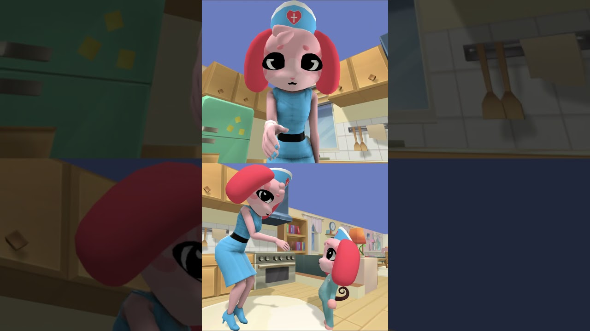

Shorts VEXU
Short-urile virale pe care le-am analizat: miniatura reală de pe YouTube, jocul și vizionările citite acolo. Un tap deschide postarea cu analiza.
 TREND SHORTS823K29 octombrie 2026Steal An Egg
TREND SHORTS823K29 octombrie 2026Steal An EggPoliția a încercat s-o oprească: un short de 22 de secunde a trecut de 250K în 7 ore
Layla Roblox are un short de 22 de secunde, „The police helicopter tried to stop giant me😅🚁”, urcat pe 25 oct, la 16:00 (ora României). 📊… TREND SHORTS2,14M29 octombrie 2026Steal An Egg
TREND SHORTS2,14M29 octombrie 2026Steal An Egg15 secunde fără nicio voce: „Mom yelling at the family” a trecut de jumătate de milion în 10 ore
Zeflay are un short de 15 secunde, „Mom yelling at the family 😱”, urcat pe 25 oct, la 13:00 (ora României). 📊 Aprox. 537K vizionări…TREND SHORTS29 octombrie 2026„If You Get Scared You SHRINK...”: lumea în care te micșorezi dacă te sperii, de la playit, ~10,4M vizualizări
Un short de la playit, cu titlul „If You Get Scared You SHRINK...”. În thumbnail se vede un personaj Roblox cu joben, pe un teren verde,… TREND SHORTS29 octombrie 2026Steal An Egg
TREND SHORTS29 octombrie 2026Steal An Egg„Steal An Egg Kid Crashes Out”: skit IRL de la Shooteo, ~0,19M vizualizări
Un short de 19 secunde de la Shooteo, un skit în viața reală, în care actorul joacă un copil furios din Steal An Egg. În thumbnail se vede… TREND SHORTS29 octombrie 2026Steal An Egg
TREND SHORTS29 octombrie 2026Steal An Egg„Day 7 LEGO Roblox Steal an Egg…”: Steal An Egg din LEGO, serie IRL de la ZaneBricks, ~0,38M vizualizări
Un short de 14 secunde de la ZaneBricks, ziua 7 dintr-o serie în care Steal An Egg e construit din LEGO. În thumbnail se vede titlul „Day… TREND SHORTS29 octombrie 2026Steal An Egg
TREND SHORTS29 octombrie 2026Steal An EggTroll cu „oul fals”: „I TROLLED This Kid With a Fake Egg 😂”, Gamer Bully, ~0,33M vizualizări
Un short de 30 de secunde de la Gamer Bully. În thumbnail se vede un ou roșu cu coarne, așezat pe un piedestal de blocuri verzi, pe o… TREND SHORTS29 octombrie 2026Steal An Egg
TREND SHORTS29 octombrie 2026Steal An Egg„Adminul a băgat un pește-fantomă…”: Ghost Fish în Steal An Egg, de la Brockodile, ~0,50M vizualizări
Un short de 21 de secunde de la Brockodile, cu titlul „How to unlock the Ghost Fish in Steal an Egg”. În thumbnail se vede un pescuit pe o… TREND SHORTS28 octombrie 2026Steal An Egg
TREND SHORTS28 octombrie 2026Steal An Egg„A Cozinheira Imortal”: povestea Roblox narată, cu subtitrări de un cuvânt, ~2,78M vizualizări
O poveste narată în portugheză, cu subtitrări de un singur cuvânt (în cover: „crianças”, adică „copii”), în galben, pe imagini animate…
TREND SHORTS28 octombrie 2026Animal Hospital„Nurse love chocolate 😂”: asistenta din Animal Hospital în 9 secunde, ~0,87M vizualizări
Un short de 9 secunde din Animal Hospital, pe ecran împărțit în două: sus, asistenta în prim-plan, cu mâna întinsă; jos, asistenta… TREND SHORTS28 octombrie 2026Steal An Egg
TREND SHORTS28 octombrie 2026Steal An Egg„Playing Steal an Egg With Younger SIBLINGS Be Like..”: skit „X be like” de 65 de secunde, ~1,87M vizualizări
Un skit „Playing Steal An Egg with your younger sibling be like:”: un om real, în fața unui fundal din joc, cu titlul mare sus și… TREND SHORTS7,78M28 octombrie 2026Steal An Egg
TREND SHORTS7,78M28 octombrie 2026Steal An Egg„Sunt cel mai lent om”: povestea playit care a trecut de 5,9 milioane în două zile
playit are un short Roblox, „Im The Slowest PERSON...”, de 144 de secunde, urcat pe 23 oct pe la 21:00 (ora României). 📊 Aprox. 5,96… TREND SHORTS6,3M28 octombrie 2026Steal An Egg
TREND SHORTS6,3M28 octombrie 2026Steal An EggNu-i nevoie de 12 ore de editare: un POV de 32 de secunde a ajuns la 5,3 milioane
Mashles are un short de 32 de secunde, „When you need to take out the trash at night 😭”, urcat pe 23 oct pe la 02:00 (ora României). 📊… TREND SHORTS5,5K28 octombrie 2026Steal An Egg
TREND SHORTS5,5K28 octombrie 2026Steal An EggCrispyClips: „1 DIN 5 E SECRET”, un format de testat cu 5 ouă
CrispyClips are un short din Steal An Egg, „I bought 5 Halloween eggs”, de 33 de secunde, urcat pe 18 oct pe la 23:13 (ora României). 📊… TREND SHORTS996K28 octombrie 2026Steal An Egg
TREND SHORTS996K28 octombrie 2026Steal An EggNoob Bacon Real dă Candy Corn pe ouă: ~956K vizionări în Steal An Egg
Noob Bacon Real are un short din Steal An Egg, „I Traded Candy Corn for Eggs in Steal An Egg”, de 47 de secunde, urcat pe 18 oct pe la… TREND SHORTS970K28 octombrie 2026Murder Mystery 2
TREND SHORTS970K28 octombrie 2026Murder Mystery 2ROKEH trece de 960K cu „SECRET IN MM2 HALLOWEEN UPDATE”: meme sus, tutorial jos
ROKEH are un short din Murder Mystery 2, „SECRET IN MM2 HALLOWEEN UPDATE!😱👻”, de 48 de secunde, urcat pe 20 oct pe la 02:00 (ora… TREND SHORTS203K28 octombrie 2026Steal An Egg
TREND SHORTS203K28 octombrie 2026Steal An Egggreendano: „The WORST Player in Steal an Egg”, gluma cu coechipierul care înțelege greșit
greendano are un short din Steal an Egg, „The WORST Player in Steal an Egg 😭”, de 33 de secunde, urcat pe 21 oct pe la 11:00 (ora…Vizionările sunt citite de pe YouTube; ultima citire: 26 octombrie, 21:25 (ora României). Cifre din momentul citirii, nu contor live.